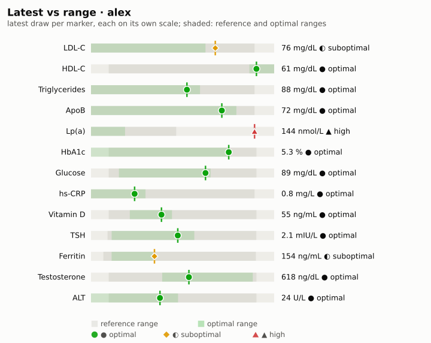
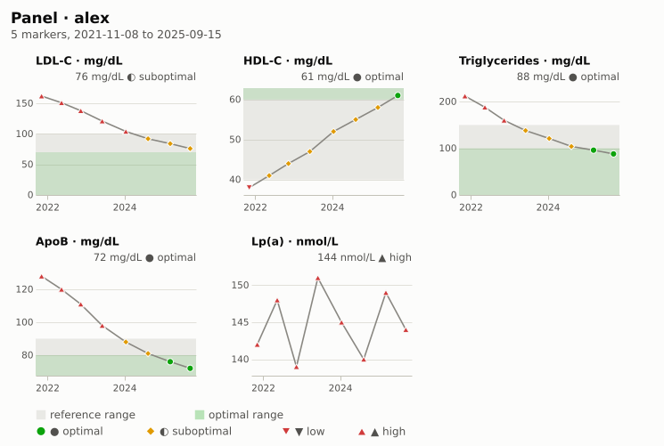
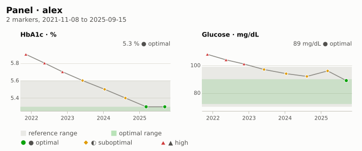
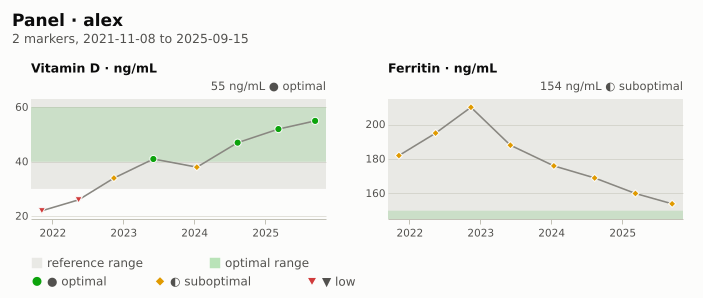
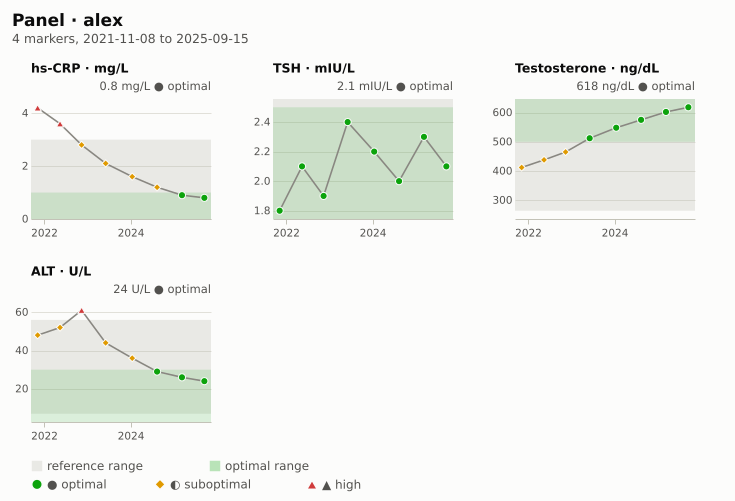

Lab draw · alex · 2025-09-30
Latest results as of 2025-09-30
Results of the draw on or before 2025-09-30, with each marker's history
for context. Refresh every block with M-x health-chart-org-update.
Out of range
- ▲ high · Lp(a) 144 nmol/L (2025-09-15), reference 0–75
Results
| Marker | Value | Unit | Date | Status | Reference | Optimal |
|---|---|---|---|---|---|---|
| LDL-C | 76 | mg/dL | 2025-09-15 | ◐ suboptimal | 0–100 | ≤70 |
| HDL-C | 61 | mg/dL | 2025-09-15 | ● optimal | ≥40 | ≥60 |
| Triglycerides | 88 | mg/dL | 2025-09-15 | ● optimal | 0–150 | ≤100 |
| ApoB | 72 | mg/dL | 2025-09-15 | ● optimal | 0–90 | ≤80 |
| Lp(a) | 144 | nmol/L | 2025-09-15 | ▲ high | 0–75 | ≤30 |
| HbA1c | 5.3 | % | 2025-09-15 | ● optimal | 4–5.6 | ≤5.3 |
| Glucose | 89 | mg/dL | 2025-09-15 | ● optimal | 70–99 | 72–90 |
| hs-CRP | 0.8 | mg/L | 2025-09-15 | ● optimal | 0–3 | ≤1 |
| Vitamin D | 55 | ng/mL | 2025-09-15 | ● optimal | 30–100 | 40–60 |
| TSH | 2.1 | mIU/L | 2025-09-15 | ● optimal | 0.4–4 | 0.5–2.5 |
| Ferritin | 154 | ng/mL | 2025-09-15 | ◐ suboptimal | 30–400 | 50–150 |
| Testosterone | 618 | ng/dL | 2025-09-15 | ● optimal | 264–916 | 500–900 |
| ALT | 24 | U/L | 2025-09-15 | ● optimal | 7–56 | ≤30 |
Where each value sits in its ranges

Figure 1: Latest value per marker against its reference (light) and optimal (dark) ranges
By category
Lipids

Figure 2: Lipid markers over time
Metabolic

Figure 3: Glycemic markers over time
Vitamins and minerals

Figure 4: Vitamin D and ferritin over time
Inflammation, thyroid, liver and hormones

Figure 5: Other markers over time